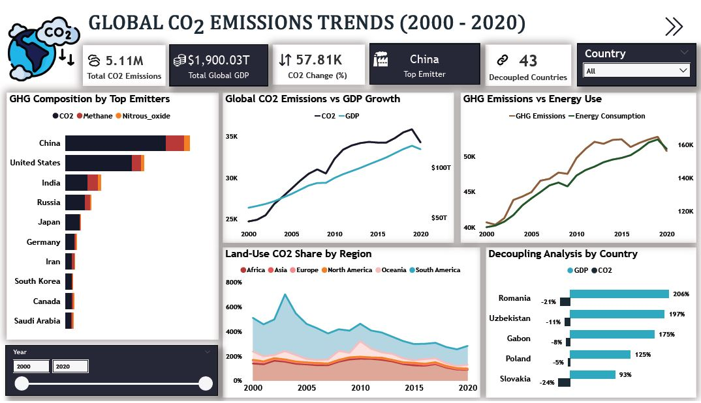

World CO₂ Emissions Analysis
Analysis of global greenhouse gas trends, top emitters, energy use, land-use change, and decoupling patterns across countries from 2000 to 2020.

Overview
This project analyzes global carbon emissions trends from 2000 to 2020 using country-level greenhouse gas data from Our World in Data. The analysis focuses on sovereign countries and excludes micro-territories and regional aggregates to improve consistency and comparability across the dataset.
The project explores how emissions have changed over time, which countries contribute the most to global CO₂ emissions, and how emissions relate to economic growth, energy use, and land-use change.
Objective
The aim of this project was to explore global greenhouse gas emissions patterns and build an interactive dashboard that highlights long-term trends, top emitters, greenhouse gas composition, energy-related emissions, and signs of decoupling between CO₂ emissions and GDP growth.
Research Questions
- How have global CO₂ emissions changed between 2000 and 2020?
- Which countries recorded the highest CO₂ emissions in 2020?
- What relationship exists between GDP growth and CO₂ emissions over time?
- How do CO₂, methane, and nitrous oxide emissions compare across top emitting countries?
- How does primary energy consumption relate to greenhouse gas emissions?
- Which countries show evidence of decoupling between economic growth and emissions?
- How much has land-use change contributed to total emissions across regions?
Dataset
The analysis uses the Our World in Data CO₂ and GHG dataset, covering the period 2000 to 2020. The working dataset contains 25 columns and 6,120 rows, with variables related to country, year, GDP, population, CO₂ emissions, methane, nitrous oxide, land-use change emissions, energy consumption, and total greenhouse gas emissions.
My Approach
I used SQL to clean and prepare the dataset by selecting relevant variables, standardizing records, handling missing values, and excluding regional aggregates to focus on sovereign countries only. The cleaned data was then connected to Power BI, where I built an interactive dashboard to analyze emissions trends, compare top-emitting countries, examine greenhouse gas composition, assess land-use change contributions, and identify countries showing signs of decoupling between CO₂ emissions and GDP growth.
Tools Used
- SQL for data cleaning, transformation, and preparation
- Power BI for dashboard development and visualization
- Our World in Data CO₂ and GHG dataset as the project data source
Key Insights
- Global CO₂ emissions increased by 57.81% between 2000 and 2020, although growth slowed around 2020 during the COVID-19 period.
- China remained the largest CO₂ emitter across the two decades, reinforcing its central role in global emissions trends.
- Energy consumption showed a strong positive relationship with greenhouse gas emissions, highlighting the continued dependence of emissions on energy demand.
- CO₂ remained the dominant greenhouse gas among top emitters, while methane and nitrous oxide played a more visible role in agriculture-heavy economies.
- South America recorded the highest land-use change CO₂ emissions, likely linked to deforestation and land disturbance.
- 43 countries showed evidence of decoupling, meaning GDP grew while emissions remained relatively stable or increased more slowly.
What I Learned
This project strengthened my ability to work with environmental data in a more structured analytics workflow. I practiced cleaning and preparing multi-country emissions data in SQL, thinking critically about which entities to include in the analysis, and designing dashboard views that connect emissions trends with economic and energy indicators.
Result
The final output is an interactive Power BI dashboard that presents global CO₂ trends, top emitters, greenhouse gas comparisons, land-use change impacts, and decoupling patterns from 2000 to 2020. The project provides a structured view of how emissions evolved over time and highlights that while global emissions increased significantly, some countries were able to grow economically with comparatively slower emissions growth.